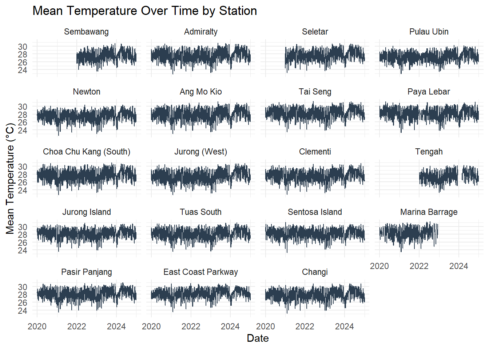
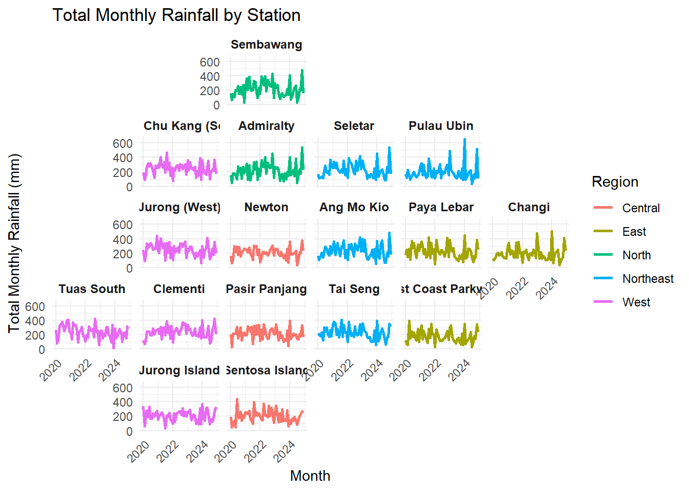
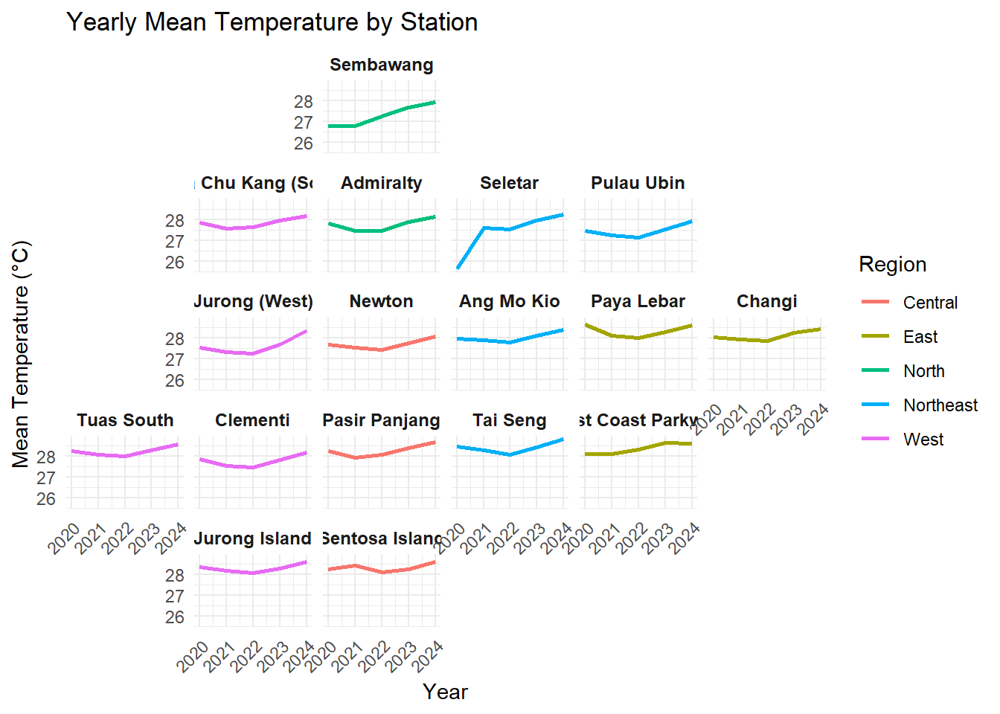
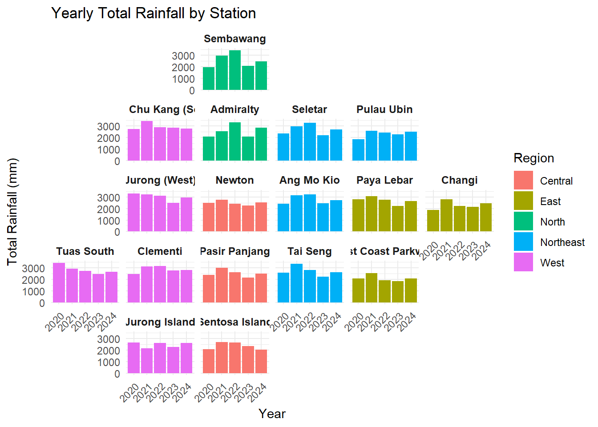
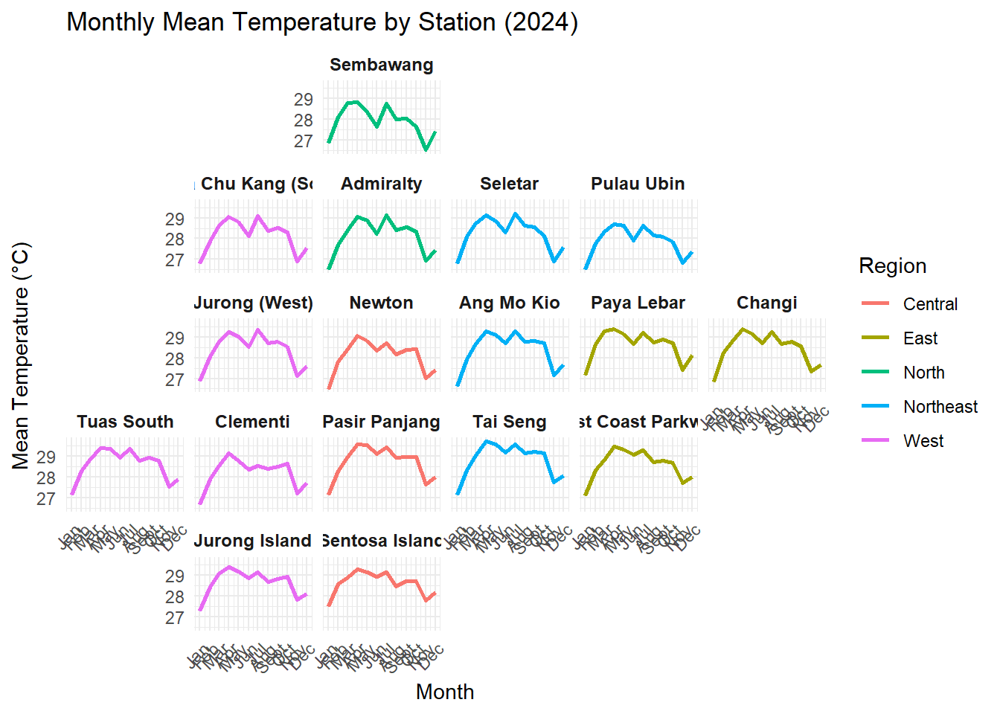
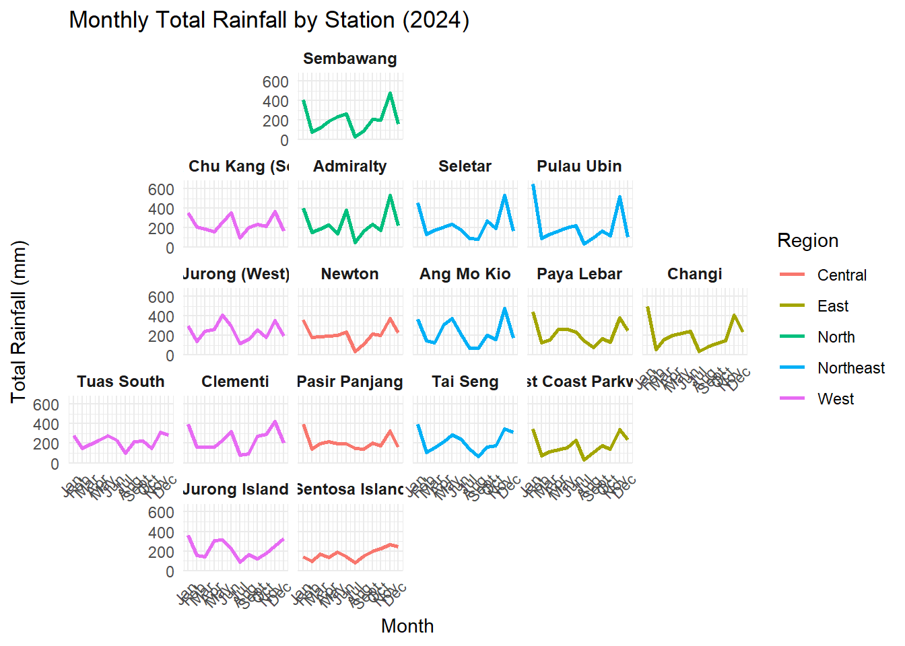
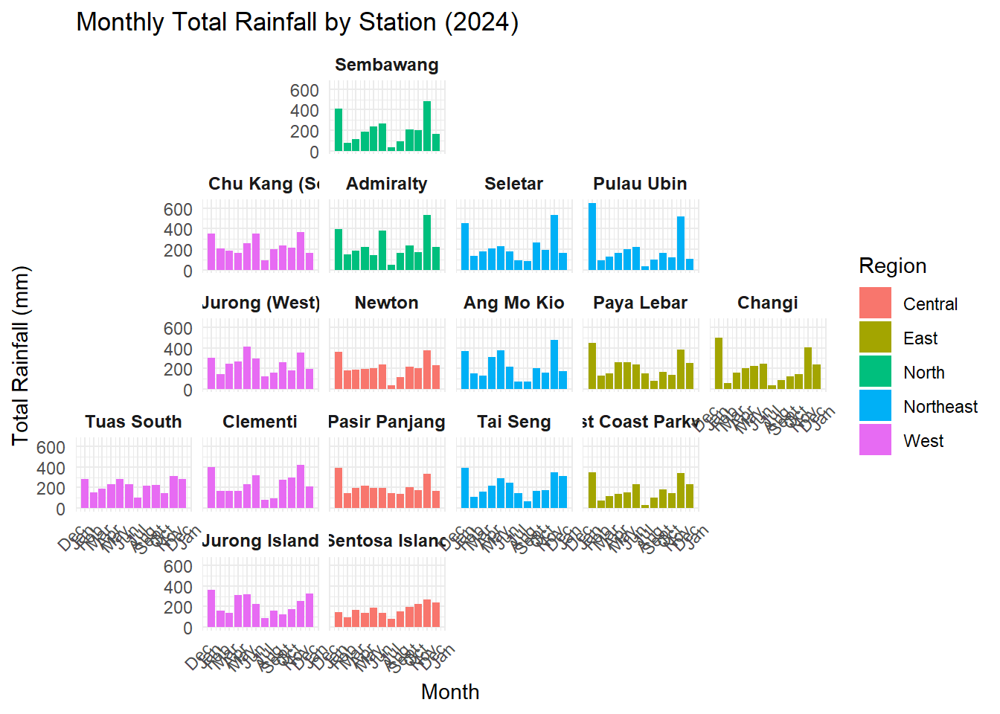

pacman::p_load(tidyverse, geofacet, ggplot2, readr)Take-home Exercise 3
Overview
We use geofacet to visualize weather data for Singapore across multiple stations in a geographically meaningful layout.
Data Preparation
The data preparation process is documented here.
Load Required Packages
Import the Dataset
weather_data <-read_csv("data/weather_data_updated.csv")Rows: 30532 Columns: 14
── Column specification ────────────────────────────────────────────────────────
Delimiter: ","
chr (2): Region, Station
dbl (11): Daily Rainfall Total (mm), Highest 30 min Rainfall (mm), Highest ...
date (1): Date
ℹ Use `spec()` to retrieve the full column specification for this data.
ℹ Specify the column types or set `show_col_types = FALSE` to quiet this message.Prepare Custom Geofacet Grid
We created a custom grid layout to approximate the geographical positioning of 19 weather stations in Singapore.
custom_grid <- data.frame(
name = c("Admiralty", "Sembawang", "Seletar", "Pulau Ubin",
"Ang Mo Kio", "Newton", "Tai Seng", "Paya Lebar",
"Choa Chu Kang (South)", "Jurong (West)", "Clementi",
"Jurong Island", "Tuas South", "Sentosa Island",
"Pasir Panjang", "East Coast Parkway", "Changi"),
code = c("Admiralty", "Sembawang", "Seletar", "Pulau Ubin",
"Ang Mo Kio", "Newton", "Tai Seng", "Paya Lebar",
"Choa Chu Kang (South)", "Jurong (West)", "Clementi",
"Jurong Island", "Tuas South", "Sentosa Island",
"Pasir Panjang", "East Coast Parkway", "Changi"),
row = c(2, 1, 2, 2,
3, 3, 4, 3,
2, 3, 4, 5,
4, 5, 4, 4,
3),
col = c(3, 3, 4, 5,
4, 3, 4, 5,
2, 2, 2, 2,
1, 3, 3, 5,
6),
stringsAsFactors = FALSE
)Visualize the Data with facet_geo()
Geofaceting with line graphs and bar charts.
Monthly Mean Temperature:
# Aggregate to monthly means
weather_monthly <- weather_data %>%
mutate(Month = floor_date(Date, "month")) %>%
group_by(Station, Region, Month) %>%
summarise(`Mean Temperature (°C)` = mean(`Mean Temperature (°C)`, na.rm = TRUE), .groups = "drop")
ggplot(weather_monthly, aes(x = Month, y = `Mean Temperature (°C)`, color = Region)) +
geom_line(size = 1) +
facet_geo(~ Station, grid = custom_grid) +
theme_minimal() +
labs(title = "Monthly Mean Temperature by Station",
x = "Month", y = "Mean Temperature (°C)") +
theme(strip.text = element_text(size = 9, face = "bold"),
axis.text.x = element_text(angle = 45, hjust = 1))Warning: Using `size` aesthetic for lines was deprecated in ggplot2 3.4.0.
ℹ Please use `linewidth` instead.Note: You provided a user-specified grid. If this is a generally-useful
grid, please consider submitting it to become a part of the geofacet
package. You can do this easily by calling:
grid_submit(__grid_df_name__)Warning: Removed 36 rows containing missing values or values outside the scale range
(`geom_line()`).
Monthly Total Rainfall:
# Aggregate to monthly total rainfall
rainfall_monthly <- weather_data %>%
mutate(Month = floor_date(Date, "month")) %>%
group_by(Station, Region, Month) %>%
summarise(`Total Monthly Rainfall (mm)` = sum(`Daily Rainfall Total (mm)`, na.rm = TRUE), .groups = "drop")
# Geofacet plot
ggplot(rainfall_monthly, aes(x = Month, y = `Total Monthly Rainfall (mm)`, color = Region)) +
geom_line(size = 1) +
facet_geo(~ Station, grid = custom_grid) +
theme_minimal() +
labs(title = "Total Monthly Rainfall by Station",
x = "Month", y = "Total Monthly Rainfall (mm)") +
theme(strip.text = element_text(size = 9, face = "bold"),
axis.text.x = element_text(angle = 45, hjust = 1))Note: You provided a user-specified grid. If this is a generally-useful
grid, please consider submitting it to become a part of the geofacet
package. You can do this easily by calling:
grid_submit(__grid_df_name__)
Yearly Mean Temperature:
# Aggregate to yearly means
weather_yearly <- weather_data %>%
mutate(Year = year(Date)) %>%
group_by(Station, Region, Year) %>%
summarise(`Mean Temperature (°C)` = mean(`Mean Temperature (°C)`, na.rm = TRUE), .groups = "drop")
ggplot(weather_yearly, aes(x = Year, y = `Mean Temperature (°C)`, color = Region)) +
geom_line(size = 1) +
facet_geo(~ Station, grid = custom_grid) +
theme_minimal() +
labs(title = "Yearly Mean Temperature by Station",
x = "Year", y = "Mean Temperature (°C)") +
theme(strip.text = element_text(size = 9, face = "bold"),
axis.text.x = element_text(angle = 45, hjust = 1))Note: You provided a user-specified grid. If this is a generally-useful
grid, please consider submitting it to become a part of the geofacet
package. You can do this easily by calling:
grid_submit(__grid_df_name__)Warning: Removed 3 rows containing missing values or values outside the scale range
(`geom_line()`).
Yearly Total Rainfall:
# Aggregate to yearly total rainfall
rainfall_yearly <- weather_data %>%
mutate(Year = year(Date)) %>%
group_by(Station, Region, Year) %>%
summarise(`Total Yearly Rainfall (mm)` = sum(`Daily Rainfall Total (mm)`, na.rm = TRUE), .groups = "drop")
# Geofacet bar chart of yearly total rainfall
ggplot(rainfall_yearly, aes(x = factor(Year), y = `Total Yearly Rainfall (mm)`, fill = Region)) +
geom_col() +
facet_geo(~ Station, grid = custom_grid) +
theme_minimal() +
labs(title = "Yearly Total Rainfall by Station",
x = "Year", y = "Total Rainfall (mm)") +
theme(strip.text = element_text(size = 9, face = "bold"),
axis.text.x = element_text(angle = 45, hjust = 1))Note: You provided a user-specified grid. If this is a generally-useful
grid, please consider submitting it to become a part of the geofacet
package. You can do this easily by calling:
grid_submit(__grid_df_name__)
Monthly Mean Temperature by Station (2024)
# Filter for 2024 and aggregate to monthly means
weather_2024_monthly <- weather_data %>%
filter(year(Date) == 2024) %>%
mutate(Month = floor_date(Date, "month")) %>%
group_by(Station, Region, Month) %>%
summarise(`Mean Temperature (°C)` = mean(`Mean Temperature (°C)`, na.rm = TRUE), .groups = "drop")
# Geofacet plot for 2024
ggplot(weather_2024_monthly, aes(x = Month, y = `Mean Temperature (°C)`, color = Region)) +
geom_line(size = 1) +
facet_geo(~ Station, grid = custom_grid) +
theme_minimal() +
labs(title = "Monthly Mean Temperature by Station (2024)",
x = "Month", y = "Mean Temperature (°C)") +
scale_x_date(date_labels = "%b", date_breaks = "1 month") +
theme(strip.text = element_text(size = 9, face = "bold"),
axis.text.x = element_text(angle = 45, hjust = 1))Note: You provided a user-specified grid. If this is a generally-useful
grid, please consider submitting it to become a part of the geofacet
package. You can do this easily by calling:
grid_submit(__grid_df_name__)
Monthly Total Rainfall by Station (2024)
# Aggregate to monthly total rainfall for 2024
rainfall_2024 <- weather_data %>%
filter(year(Date) == 2024) %>%
mutate(Month = floor_date(Date, "month")) %>%
group_by(Station, Region, Month) %>%
summarise(`Daily Rainfall Total (mm)` = sum(`Daily Rainfall Total (mm)`, na.rm = TRUE), .groups = "drop")
# Geofacet bar chart with abbreviated month labels
ggplot(rainfall_2024, aes(x = Month, y = `Daily Rainfall Total (mm)`, color = Region)) +
geom_line(size = 1) +
facet_geo(~ Station, grid = custom_grid) +
theme_minimal() +
labs(title = "Monthly Total Rainfall by Station (2024)",
x = "Month", y = "Total Rainfall (mm)") +
scale_x_date(date_labels = "%b", date_breaks = "1 month") +
theme(strip.text = element_text(size = 9, face = "bold"),
axis.text.x = element_text(angle = 45, hjust = 1))Note: You provided a user-specified grid. If this is a generally-useful
grid, please consider submitting it to become a part of the geofacet
package. You can do this easily by calling:
grid_submit(__grid_df_name__)
# Aggregate to monthly total rainfall for 2024
rainfall_2024 <- weather_data %>%
filter(year(Date) == 2024) %>%
mutate(Month = floor_date(Date, "month")) %>%
group_by(Station, Region, Month) %>%
summarise(`Daily Rainfall Total (mm)` = sum(`Daily Rainfall Total (mm)`, na.rm = TRUE), .groups = "drop")
# Geofacet bar chart with abbreviated month labels
ggplot(rainfall_2024, aes(x = Month, y = `Daily Rainfall Total (mm)`, fill = Region)) +
geom_col() +
facet_geo(~ Station, grid = custom_grid) +
theme_minimal() +
labs(title = "Monthly Total Rainfall by Station (2024)",
x = "Month", y = "Total Rainfall (mm)") +
scale_x_date(date_labels = "%b", date_breaks = "1 month") +
theme(strip.text = element_text(size = 9, face = "bold"),
axis.text.x = element_text(angle = 45, hjust = 1))Note: You provided a user-specified grid. If this is a generally-useful
grid, please consider submitting it to become a part of the geofacet
package. You can do this easily by calling:
grid_submit(__grid_df_name__)